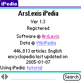
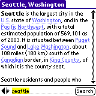
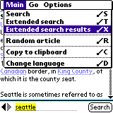
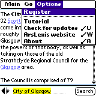

| |
Products | Downloads | Buy | Documentation | News | Support |
|
|
iPedia requires a Palm PDA with direct, wireless connection to the Internet.
Those models include (but are not limited to): Treo 600, Treo 650, Tungsten C,
Tungsten W, Clie PEG-TH55, Clie PEG-UX50, Kyocera QCP-7135,
Samsung SPH-i500, Treo 300, Treo 270.
iPedia is optimized for Treo smartphones. |
| Download iPedia and install iPedia.prc on the device. |
|

iPedia provides encyclopedias in 3 languages: English, German and French. Since the number of
articles in each encyclopedia is growing every week, on startup iPedia displays About
screen which displays which encyclopedia is currently being used as well as current number
of articles in that encyclopedia and the date when encyclopedia data was last updated.
The database is constantly updated so watch the number of articles grow! |
 To change the language, use 'Main/Change language' menu item and select a language from the
list, or press 'Cancel' button.
To change the language, use 'Main/Change language' menu item and select a language from the
list, or press 'Cancel' button.
|

 To read an encyclopedia article about a given subject, type it in the text
box and press "Search" (or center button on Treo's 5-Way Navigator
or use 'Main/Search' menu item).
To read an encyclopedia article about a given subject, type it in the text
box and press "Search" (or center button on Treo's 5-Way Navigator
or use 'Main/Search' menu item).
For example, to read article on Seattle, type 'seattle' in the text box. iPedia will download article and display it. If a definition doesn't fit on one screen it can be scrolled using hardware up/down buttons, scrollbar or 5-Way Navigator's up/down buttons (available e.g. on Treo or Tungsten). |
 Encyclopedia articles often link to other articles. Press on a hyperlink to
read linked article.
Encyclopedia articles often link to other articles. Press on a hyperlink to
read linked article.
|
 iPedia has two kinds of links:
iPedia has two kinds of links:
|
|
'Search' takes you directly to an article on a given subject. To find all
articles that mention a given word, use 'Main/Extended search' menu item.
In response you'll get a list of articles containing a given word.
In the example: list of all articles containing word 'Seattle' |
| To read an article, simply select it from the list. |
|  At any time you can get a list of results for the last extended search. |
|
You can also refine a search to narrow down the list of results. Let's assume
that your search for 'Seattle' returned too many articles. You can add additional
search word e.g. "keyarena" and press "Refine" button.
In response you'll get a (smaller) list of articles that contain both 'Seattle' and 'KeyArena' words. |
 Other menu options:
Other menu options:
|
| For a few ideas on what kind of information you can get with iPedia, read about iPedia usage scenarios. |
|

Unregistered version of iPedia limits the number of articles that can be
viewed. In order to remove that limit, you need to purchase registration code. After purchasing
iPedia, registration code is e-mailed to you. We strongly recommend saving
it in a safe place for future reference.
Use menu item 'Options/Register' to enter registration code. Press 'Later' to postpone registration process. Press 'Register' to verify registration code. Registration code consists of numbers only. |
 If the registration code is invalid, iPedia will show a dialog box informing
about that. Press 'OK' to postpone registration process or 'Re-enter registration
code' to correct the registration code.
If the registration code is invalid, iPedia will show a dialog box informing
about that. Press 'OK' to postpone registration process or 'Re-enter registration
code' to correct the registration code.
If the registration code is valid, iPedia shows a dialog box notifying about that. If you re-install iPedia you'll have to re-enter registration code, so please keep it for future reference. |
|
You can check if there's an updated version of iPedia directly from the program.
Select menu 'Options/Check for updates'. If a web browser is installed
on the device you'll be taken to a page showing if there's in update for
iPedia.
You can also use 'Options/ArsLexis website' to visit a special version of ArsLexis website optimized for viewing on Palm web browser. You'll find there description of our software for Palm and links to direct downloads. |

|
On Treo iPedia supports 5-way navigator to make some common tasks
easier:
|
|
We strive to provide great support for our software. To obtain support please visit support page on our website. To provide feedback to our development team, suggest improvements, discuss ideas and exchange tips and tricks with other users, participate in our Yahoo! based discussion group http://groups.yahoo.com/group/arslexis. |